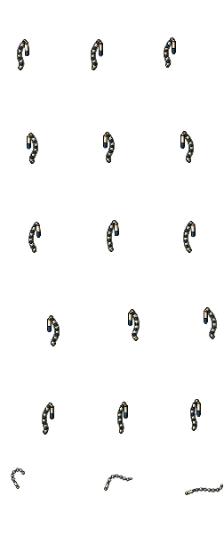

Upright bone handle, with the segmented lash hanging from its top. Three approved attack frames retained unchanged.
Same sprite scale and grip coordinates. Only diagonal-rear frame 11 widened from 64 to 66 pixels, at the right edge. Isolated equipment preview; body occlusion still needs in-game testing. Not installed.
